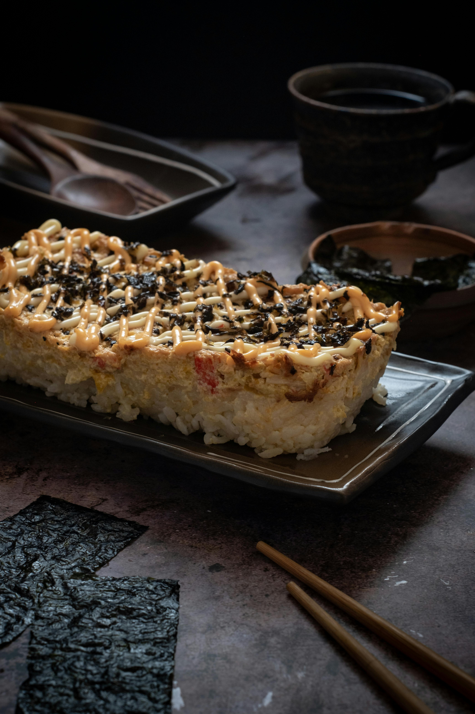

Sarah's Sushi Bake

Description: Budget friendly, healthy and tastes just like sushi.
Based on multiple recipes but specifically the NYT one
For the sauce:
- 1 can of Ocean's salmon
- 1 teaspoon of soy sauce
- Srirachia to taste, depending on your spice level
- Kewpie mayo
- 1 cup dry of sushi rice
- Seaweed
- Sesame seeds
Steps
- Cook sushi rice fully
- Add 1/4 of a cup of sushi rice to a cold stainless steel pan, and mash in the canned salmon with the juices
- Add drizzle of mayo and hot sauce to your liking, with a teaspoon of soy sauce (the fish is already salty so you can't add too much)
- Put whole pan in oven at 350 for 10-15 mins, until its a bit browned
- Serve and garnish with extra mayo, hot sauce, and sesame seeds, eat by putting the rice and salmon seaweed, lightly dip in soy sauce and enjoy!
Home